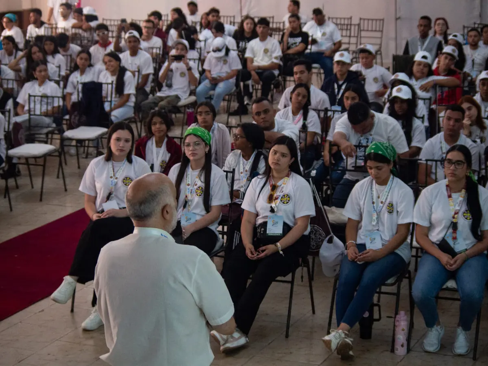

RealizadoRealizado: el programa cerró el 22 de junio de 2026Programa formativo · Juventud
Kairós Joven
Programa formativo virtual para dar herramientas a quienes sirven a la juventud: secretariados, religiosos, laicos y personas interesadas.

Datos del evento
- Fecha
- Sesiones documentadas del 17 de marzo al 22 de junio de 2026
- Hora
- No publicada en las notas oficiales.
- Modalidad y lugar
- Virtual · Virtual, por Zoom, a las 7:00 p. m.
- Organiza
- Coordinación Nacional de Pastoral Juvenil, a través del Centro de Laicos, Familia y Juventud
- Estado
- Realizado: el programa cerró el 22 de junio de 2026
Cómo fue
En 2026 hubo tres sesiones documentadas. El 17 de marzo se trabajó la «Cultura del Encuentro». El 25 de mayo, «Conciencia: base de la salud emocional», con un psicólogo de la Diócesis de Maracay.
El lunes 22 de junio, a las 7:00 p. m., fue la sesión de cierre, sobre empatía y acompañamiento psicoespiritual, con una ponente invitada: una hora de exposición y 20 minutos de preguntas.
Qué se hizo
- 17 de marzo: «La cultura del encuentro» (bloque II, tema 02).
- 25 de mayo: «Conciencia: base de la salud emocional» (bloque III).
- 22 de junio: «Empatía: el acompañamiento psicoespiritual en la práctica» (cierre).
Quién participó
Solo cargos públicos. Los nombres de laicos participantes y de menores no se publican.
- La coordinadora del Área de Iniciación de la Fe de un centro de la CEV, el 17 de marzo.
- Un psicólogo de la Diócesis de Maracay, el 25 de mayo.
- Una ponente invitada, el 22 de junio.
Cifras
- Unas 45 personas conectadas en la sesión del 25 de mayo, según la nota de la CEV del 27 de mayo de 2026.